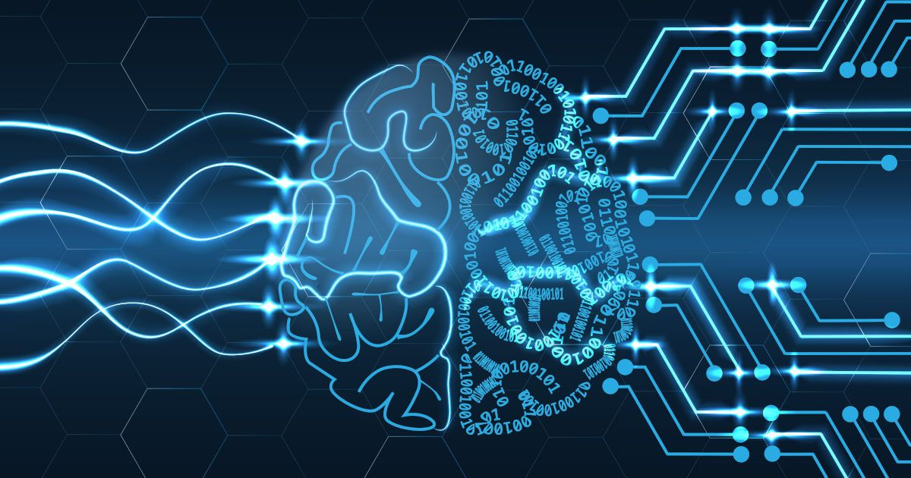

¿Cómo aprender a programar Machine Learning desde cero? (Roadmap)
Elena Hernandez
Hoy vamos hablar de cuál es el rumbo a seguir si quieres ser un
desarrollador especializado en Machine Learning.
La inteligencia Artificial está avanzando velocidad vertiginosa,
está representando una revolución nuestra sociedad, de hecho se está
introduciendo cada vez más en nuestro día día. Y la tecnología que
representa la mayor parte del pastel en este sector, es el
Machine Learning.
Esta rama de la inteligencia artificial está enfocada al desarrollo
de algoritmos para que los ordenadores sean capaces de aprender de
manera automática, y esto es muy interesante para muchísimas
empresas tecnológicas.
Por eso,
el momento idóneo para aprender es probablemente el 2023, porque toda la enorme utilidad que se le está viendo.
Hay muchísimas empresas que están interesadas en implementarlo en
sus tecnologías y al final lo que buscan son desarrolladores que
puedan hacer precisamente eso. Esta es la razón por la que hay una
altísima demanda de desarrolladores especializados en Machine
Learning y su escasez actual implica que al final
los salarios son más altos y desde luego el entorno del moral es
de los mejores del sector.
¿Y que hay que hacer para aprender Desarrollo de Inteligencia
Artificial?
Vamos a verlo.
Aprender Computer Science (Ciencia de Computadores)
Al final un desarrollador en Machine Lerning tienen que realizar un
código que sea estable que sea útil y también que sea seguro, y para
poder hacer esto va a tener que aprender muchísimo sobre
arquitectura de computadores.
Este código computacionalmente es muy exigente, y eso implica que va
a tener que conocer conceptos como por supuesto bytes, bits, etc; y
también cosas como el uso de una CPU y como se desconectan entre
ellas, o cuándo es más útil utilizar una utilizar otra para su
código.
Aprender a programar en Python
En segundo lugar, algo que va a ser fundamental aprender es por
supuesto un lenguaje de programación, porque al final el lenguaje de
programación es aquello que utilizamos para comunicarnos con la
máquina.
Y desde luego aquí no hay ninguna duda,
si quieres convertirse en un desarrollador de Machine Learning, el
lenguaje que tienes que aprender sí o sí va a ser Python.
Python es el lenguaje más usado cuando se trata de Machine Learning.
Aprender lenguajes complementarios puede ser interesante, como por
ejemplo JavaScript, pero realmente el rey en Machine Learning, es
Python.
Además de aprender este lenguaje de programación tienes que aprender
dos bloques fundamentales de la programación.
Por un lado la estructura de datos, y esto
significa aprender como ordenamos los datos que tenemos, y para esto
es importante aprender cosas como qué es una lista, qué es una red,
qué es diccionario, y muchísimas otras estructuras.
Por otro lado, tenemos los algoritmos mínimos de búsqueda y
ordenamiento. Hay muchísimos algoritmos diferentes y va a ser
importante que aprendas cuáles son las bases.
Aprender las bases del Machine Learning
Dentro de estas bases, sería interesante enfocarse en el Deep
Learning, porque es una de las claves es aprender lo que es una
inteligencia artificial. Y dentro de este Deep Learning, necesitarás
saber lo que es una red neuronal artificial.
Las redes neuronales artificiales son estructuras que imitan el
funcionamiento del cerebro humano, de manera que creamos algoritmos
que permiten a las máquinas tanto aprender como también predecir
resultados futuros.

Master de Inteligencia Artificial de Conquer Blocks (100% online)
Como ves, aunque el Machine Learning
parece algo complicado es algo que se puede aprender sobre todo
siguiendo una formación adecuada. Por eso en
Conquer Blocks hemos creado un Master en
inteligencia artificial donde aprenderás a desarrollar este tipo de
tecnología tanto si vienes desde cero y no tienes ni idea de
programación, como si ya sabes un poco o si ya programas.